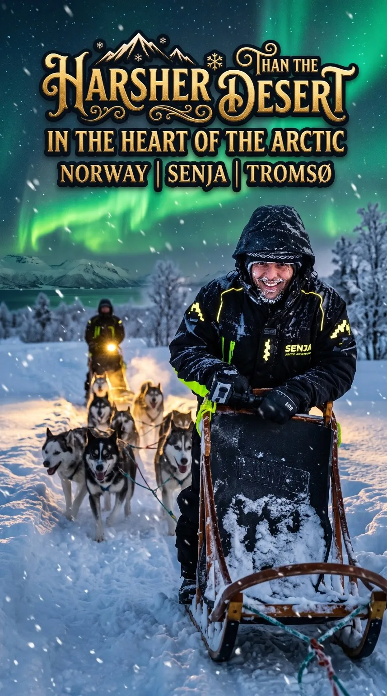

Arctic Survival Struggle: The Daily Ritual Before Stepping Into Sub-Zero Cold!

Full approved article
Arctic Survival Struggle: The Daily Ritual Before Stepping Into Sub-Zero Cold!
By: KARIM SAAB (Abdulkarim bin Ibrahim Al-Saab)
Inside the Arctic Circle, where temperatures plummet far below freezing and the sun vanishes for weeks during the Polar Night, the simplest human decision—merely opening the front door and stepping outside—transforms into a demanding daily battle requiring strict physical and mental preparation.
From inside a warm timber cabin in the far north of Norway, KARIM SAAB documents the exhausting daily routine required before braving the sub-zero elements. The ritual begins with gearing up in a heavy-duty insulated Arctic thermal suit—a thick protective barrier engineered to withstand freezing winds and lethal moisture. Putting on this suit is far from effortless; it is a physical workout in itself, requiring removing regular indoor clothing and pulling on heavy insulated layers that immediately restrict mobility and weigh down the body.
Equally critical to Arctic survival is protecting the feet. Sturdy hiking boots are placed right next to the heater beforehand so they are warm before slipping them on. Every lace is tightened and the lower snow gaiters of the thermal suit are sealed with extreme precision to ensure not a single speck of snow gets inside—because in polar conditions, wet feet are not a minor discomfort, but a direct threat to safety.
Amidst this physical strain, the human and spiritual perspective of a Muslim traveler shines through. Remaining encased in heavy thermal gear all day does not only restrict physical movement, it also makes performing ablution (Wudu) and daily prayers a genuine test of patience and endurance.
Reflection by KARIM SAAB:
"When you experience these harsh conditions firsthand, you truly appreciate the daily struggle endured by people living in the far north just to carry out ordinary routines—and you feel profound gratitude for the blessings of warmth, ease of movement, and effortless worship back home. Every journey across the corners of the earth is a lesson in patience and gratitude, and a reminder to leave a good impact before you depart."